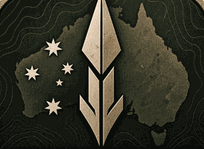

Gallery
Captures and concept art
Captures from the pre‑alpha build come first, each labelled with the map, the date and the session it came from. Concept art follows: the intended direction, not gameplay.
In‑engine captures
No in‑engine captures have been published yet. When they are, they appear here, captioned with the map, the capture date and the development session, and marked as work in progress.
Title screen artwork
Title screen and environment concepts
-

Only images marked In‑engine are captured from the game. Everything else in this section is title‑screen artwork or concept art produced outside the game, and is labelled as such.